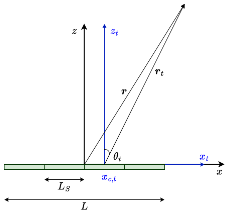
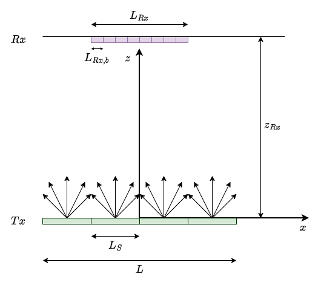
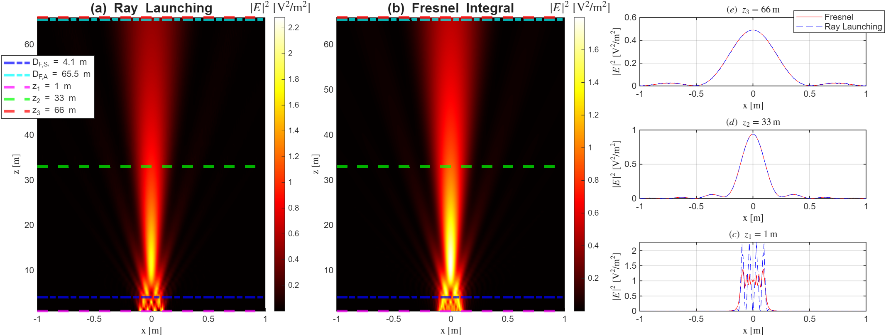
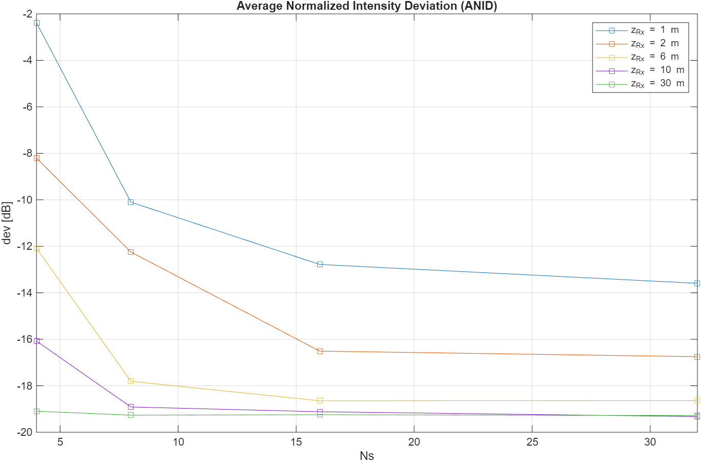
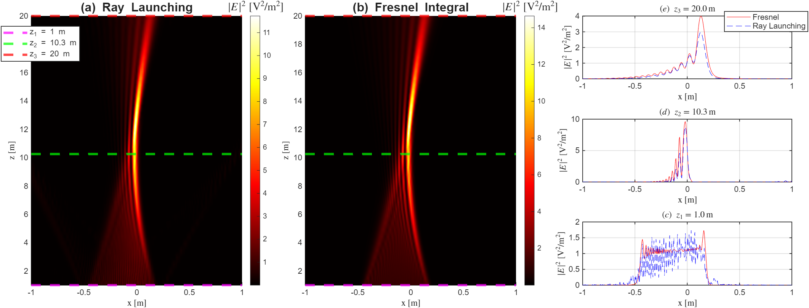

面向近场 U-MIMO 太赫兹通信的基于子孔径的射线追踪框架
摘要
太赫兹（THz）通信以大孔径天线和扩展的近场（NF）区域为特征，为开发可适配的波束操控策略提供了机会，尤其是与超大规模多输入多输出（U-MIMO）相关的策略。虽然射线追踪（RT）为全波方法提供了一种有吸引力的替代方案，但传统基于射线的方法通常是在远场（FF）假设下建立的。我们提出一种将 RT 扩展到 NF 区域的技术，从而能够对发射阵列进行基于射线的 NF 表征。我们将发射阵列建模为天线孔径，并开发了一个 RT 框架，该框架将发射孔径划分为若干子孔径，这些子孔径发射远场贡献，而远场贡献可通过几何光学（GO）传播。我们基于所提出的框架开发了一种射线发射算法，并以全波传播为参照评估其波束重建准确度。结果表明，通过可调孔径划分，所提方法能够利用 GO 射线传播复现近场 U-MIMO 太赫兹通信所特有的波束调控效应。
索引词：
Terahertz (THz), ultra-massive MIMO, near field, far field, ray tracing, angular spectrum representation, wavefront engineeringI 引言
太赫兹（THz）通信理论上可支持高达每秒数太比特的传输速度，并构成未来6G及更下一代网络的有价值候选技术。另一方面，由于高传输损耗和THz源输出功率受限，这些频率上的传输具有高度方向性，需要具有大孔径尺寸的天线。因此，实际THz系统不仅必须工作在远场（FF），还必须工作在近场（NF）区域，这为开发自适应波束操控策略提供了机会，尤其是与超大规模多输入多输出（U-MIMO）相关的策略 [1]。 在FF区域，电磁（EM）波的波前可以相当好地近似为平面，而在NF区域，则需要更复杂的波模型（如球面波）来准确描述传播 [2]。 由于高衍射、穿透和反射损耗，THz传播信道将仅以少数主导路径和少数低阶反射路径为特征，因此相对于较低频率，它们将更稀疏。 对具有高传输损耗和稀疏性的信道进行建模的必要性，要求开展特定站点分析，而射线追踪（RT）仿真能够捕捉这类分析 [3]。特定站点无线信道表征通过环境几何结构来考虑通信系统周围的环境，例如建筑物、植被和移动物体，包括它们的材料和表面特性 [4]。RT是一种基于几何光学（GO）的确定性的（即基于电磁波传播理论）特定站点信道建模方法 [3]。 近期工作表明，RT能够复现U-MIMO系统典型的NF特性，包括球面波传播和空间非平稳性 [5]，在THz场景中也是如此 [6]。U-MIMO系统通常依赖视距（LoS）分量作为主导且最可靠的信道。在NF中，大规模发射阵列的行为类似于光学光阑，在接收阵列表面产生菲涅耳衍射图样 [7]。文献 [8]的作者开发了一个分析框架，用于研究由可重构智能表面（RIS）辅助的链路，采用角谱表示技术，将RIS视为有限尺寸的连续表面，并给出了涉及波前工程操作的示例。 文献 [9]的作者提出了一种方法，通过将RIS离散为一组可视为天线孔径的表面单元来表达RIS再辐射的场；该工作表明，RIS再辐射的场可以表述为每个表面单元再辐射的FF球面小波之和。所提方法可应用于RIS的FF区域和辐射NF区域。 遵循相同原理，可以通过由构成该孔径的适当子孔径阵列所辐射的场的叠加，来展开通过孔径发射的场。该方法通过对辐射场采用远区基尔霍夫近似，能够以射线光学形式计算原始孔径近区内的场。随后，可以通过GO定律追踪从每个子孔径坐标中心发射的射线光学场 [10]。在本工作中，我们提出了一种将RT扩展到NF区域的技术，从而能够对发射阵列进行基于射线的NF表征。现有关于NF U-MIMO RT的工作通常将发射阵列视为一组天线单元，而我们将其建模为天线孔径，并开发了一个RT框架，该框架将发射孔径划分为多个子孔径，每个子孔径产生可使用GO传播的FF贡献。我们基于所提框架开发了一种射线发射（RL）[11]算法，并在LoS场景中对照菲涅耳积分评估其波束重建准确度。我们证明，通过可调孔径划分，所提框架能够通过基于射线的传播复现NF U-MIMO THz通信特有的波束操控效应。本文给出的结果是在子孔径发射柱面波的2D场景中获得的，但可以扩展到子孔径发射球面波的3D场景。
II 基于子光阑的模型
II-A 理论框架
考虑一个与发射机（Tx）相关联的光阑天线 ，其位于 平面（坐标系 ）上，长度为 （沿 轴），且沿 轴为无限长： 我们希望计算场 ，该场由 在观测点 处发射。 场 的波长为 ，其恰在离开光阑 之前表示为：
| (1) |
其中 、 和 、。我们将 的夫琅禾费距离计算为： 我们将 表示为 个相邻子光阑的集合 ，其尺寸为 ，如图 1 所示。

在这种情况下， 尺寸满足：。 通用子光阑 以坐标 为中心，并定义为： Tx 光阑可写为： 假设 辐射场 ，则场 恰在离开 之前表示为：
| (2) |
我们将 的夫琅禾费距离计算为： 利用叠加原理，我们将总场 （来自光阑 ）用所有子光阑的各个场表示如下：
| (3) |
注意： 在 的情况下，，因此我们可以定义一个区域
| (4) |
在该区域上，子光阑 所发射场的远场（FF）近似在阵列 的近场（NF）与远场（FF）区域内均成立。我们将该区域称为有效区域。在有效区域内， 可通过其远场（FF）近似 计算，并且 (3) 可写为：
II-B 解析表达式
II-C 近场光线发射
我们利用 II-A、II-B 中提供的结果，开发一种简单的光线发射（RL）算法，旨在适用于视距（LoS）下有效区域（4）内的 。我们设置空间采样周期 ，并生成发射端（Tx）光阑轴 ，使得 。然后，我们对 (1) 用 个采样点进行采样： 为了重建由 发射的光束，我们将接收端（Rx）建模为宽度为 的光阑。为了控制 Rx 处重建光束的分辨率，我们将接收光阑分解为 个大小为 的格元（bin）。在图 2 中，我们展示了一个简化的 RL 场景，其中 Rx 位于 Tx 前方距离 处。一般格元的中心为 ，格元坐标 在区间 内均匀间隔。

与由 射出并到达 Rx 的光线相关的场值，经处理后存储在向量 中，该向量包含 个元素。下面聚焦于子光阑 。 我们生成 k 向量： 我们选择 个传播分量（即满足 的分量），这些分量来自 ，并将它们存储在 为了控制 RL 算法的计算复杂度和准确度，我们设置发射方向数 ，并对 在 个采样点上进行插值，得到： 可利用 的元素计算系数 ，计算方式为数值或解析方式，并采用 (5)：我们将在 II-D 中讨论该问题。该系数将用于通过光线重建 Rx 处的光束。我们从 中提取光线发射角，所用公式为 (7)、(8)： 现在我们可以表示从子光阑中心 出发的一般光线。将 的一般元素代入 (7)，得到 ，由此确定光线方向。我们将光线轨迹写为： 假设 Rx 位于平面 （图 2），在已知光线轨迹的情况下，我们求出光线距离 以及光线击中 Rx 平面的点 。 若 ，则该光线击中 Rx，我们按如下方式确定包含命中点的中心为 的格元： 我们将命中点与所选格元中心之间的误差表示为： 的值存储在向量 中，该向量维度为 ，并按照算法 1 更新；该算法计算 Rx 处的场分布，并将结果存储在向量 中，其中 表示 ray。
II-D 子光阑角谱计算
考虑一般子光阑 ，其场分布由 (2) 给出。若 在区间 内变化较小，则可用下式近似 (2)： 其中： 应用变量替换 ，并将 代入 (5)，我们容易推导出子光阑局部角谱的解析表达式：。所得新表达式用于计算光线系数：。

III 应用示例
III-A 均匀相位和幅度的光阑
我们考虑一个发射光阑 ，其尺寸为 ，以参考系统 的原点为中心，辐射波长为 的电磁场。这种发射器具有夫琅禾费距离 ，因此可为室内近场（NF）场景提供良好的基准。我们旨在在尺寸为 、位置如图 2 所示的接收（Rx）光阑上重建波束。为进行性能分析，对发射（Tx）光阑以 个采样点和 进行采样。 我们将 Rx 光阑划分为 个尺寸为 的区间。假设我们要针对最大 Tx-Rx 距离 评估性能分析，则在已知 Rx 区间尺寸的情况下设置从每个子光阑发射的光线数。为此，我们计算连续两条发射光线 之间的角度增量，并控制 ，使得 。我们选择 ，从而得到 。 我们将算法 1 的波束重建性能与菲涅耳积分提供的解析解进行比较。我们按如下方式计算菲涅耳积分：
| (11) |
其中下标 表示 波。 在图 3 中，我们展示了使用表面场为 、 和 的光阑所获得的结果。结果表明，基于光线的解在有效区域（4）内提供了良好的波束重建能力。我们给出了三种不同传播情形的截面：子光阑近场/阵列近场、子光阑远场/阵列近场以及子光阑远场/阵列远场。子光阑近场/阵列近场情形（图 3(c)）的仿真结果表明，在有效区域之外，算法 1 如预期那样无法准确重建波束。子光阑远场/阵列近场（图 3(d)）和子光阑远场/阵列远场（图 3(e)）情形下的结果表明，算法 1 正确再现了通过解析解获得的波束。 为对基于光线的方法与解析方法进行数值准确度比较，我们定义平均归一化光强偏差（ANID）如下：
| (12) |
在图 4 中，我们展示了将 Tx 光阑分割为更多更小的子光阑如何能够降低阵列附近的 ANID。这是因为在固定 和 时，增大 可以减小 ，从而扩展有效区域（4）。此外，我们观察到增大 （在固定 时）会使所分析距离范围内的 ANID 减小。最后，我们可以看到，当距阵列光阑的距离足够大时，使用更大的 并不会提升性能，因为无论采用多少个子光阑，子光阑远场近似都得到了很好的满足。


III-B 艾里光束
在图 5 中，我们展示了使用表面场为 的光阑所获得的结果，该光阑发射具有相位分布 和参数 、、、、 的艾里光束。Tx 光阑以 个采样点和 进行采样。在本例中，Tx 光阑上的场相位变化很快，因此子光阑数量需要高于前一个相位均匀的示例。为此，我们设置 。注意，在这种情况下， 和 ，因此发射机在扩展的 NF 区域内工作。Rx 具有与 III-A 中相同的尺寸和分辨率。我们在参数为 、 的 NF 场景中进行了仿真。 已按照 III-A 中所遵循的流程设置。已在阵列附近位置（图 5(c)）、抛物线轨迹顶点（图 5(d)）、抛物线轨迹顶点之后距离处的阵列 NF（图 5(e)）绘制了截面。结果表明，在子光阑数量足够高时，算法 1 能够在有效区域（4）内以有限误差复现 NF U-MIMO THz 通信中典型的波束操控效应。
IV 结论
本工作开发了一种射线追踪（RT）框架，旨在用于 U-MIMO 天线的 NF 区域和远场（FF）区域。为此，我们将 U-MIMO 天线建模为光阑，并将其分割为发射 FF 贡献的子光阑，这些贡献可通过几何光学（GO）传播。我们基于所提出的框架开发了一种设计用于 LoS 的射线发射（RL）算法，并将其波束重建准确度与菲涅耳积分进行比较。结果表明，在适当的光阑分割下，我们的框架能够相对于相应的基于波的解，以有限误差复现 NF U-MIMO THz 通信中典型的波束操控效应。未来工作将聚焦于所提出框架的参数优化及其向复杂场景的扩展。
V 致谢
本工作由欧盟（HORIZON-MSCA-2023-DN-01）资助，资助协议编号为 101169044-TeraWireless。
References
- [1] (2025) Beam manipulation for terahertz communications: a new quality productive force. Note: arXiv:2503.22158 External Links: 2503.22158 Cited by: §I.
- [2] (2023) Near-field communications: a tutorial review. IEEE Open Journal of the Communications Society 4 (), pp. 1999–2049. External Links: Document Cited by: §I.
- [3] (2024) Deterministic ray tracing: a promising approach to THz channel modeling in 6G deployment scenarios. IEEE Communications Magazine 62 (2), pp. 48–54. External Links: Document Cited by: §I.
- [4] (2024) Site-specific radio channel representation for 5G and 6G. Note: arXiv:2406.09025 Cited by: §I.
- [5] (2026) A novel array-based ray tracing channel model for 6G ultra-massive MIMO communications. IEEE Transactions on Communications 74, pp. 10232–10245. Cited by: §I.
- [6] (2025) Site-specific ray-tracing and experimental validation for THz channel characterization. IEEE Transactions on Terahertz Science and Technology 15 (3), pp. 319–331. External Links: Document Cited by: §I.
- [7] (2026) Optics-inspired foundations for near-field wireless communications. npj Wireless Technology 2 (1). External Links: ISSN 3059-4391, Document Cited by: §I.
- [8] (2022) Reconfigurable intelligent surface: an angular spectrum representation approach. In 2022 56th Asilomar Conference on Signals, Systems, and Computers, pp. 413–418. External Links: Document Cited by: §I.
- [9] (2022) Reradiation and scattering from a reconfigurable intelligent surface: a general macroscopic model. IEEE Transactions on Antennas and Propagation 70 (10), pp. 8691–8706. External Links: Document Cited by: §I.
- [10] (1989) High-frequency asymptotic methods for analyzing the EM scattering by open-ended waveguide cavities. Ph.D. Thesis, The Ohio State University, Columbus, OH, USA. Cited by: §I.
- [11] (2024) On the digitization of the EM environment: a comparison of ray launching solutions. In 2024 IEEE International Mediterranean Conference on Communications and Networking (MeditCom), pp. 85–90. External Links: Document Cited by: §I.
- [12] (1999) Principles of optics: electromagnetic theory of propagation, interference and diffraction of light. Cambridge University Press. External Links: ISBN 9781139644181, Document Cited by: §II-B.